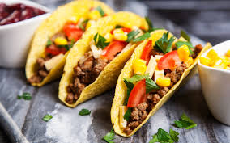

Home |
Receita 1|
Receita 2|
Receita 3|
Introdução da paginá
Explicar o que é esta paginá
Tacos Mexicanos Orijinais / Receita 2

Descrever a receita 2
VEJA A RECEITA 2
Ingredientes
Chilli
- 400 g de carne de moida
- 1 colher (chá) de óleo
- 2 cebolas médias
- pimenta a gosto
- 4 colheres (sopa) de extrato de tomate
- 2 colheres (sopa) de mostarda
- 2 xícaras (chá) de feijão preto cozido
- 150 g de queijo mussarela
- sal a gosto
Guacamole
- 1 abacate médio
- 2 tomates médios picados
- pimenta a gosto
- 1 cebola média picada
- suco de 1 limão médio
- 3 colheres (sopa) de azeite de oliva
Acompanhamentos
- 1/2 maço de alface picado
- 250 g de queijo mussarela picado
- 4 tomates sem pele picados
Utensílios
Modo de preparo
VOLTE PARA O TOPO DA PAGINA
TODO GOSTOSO